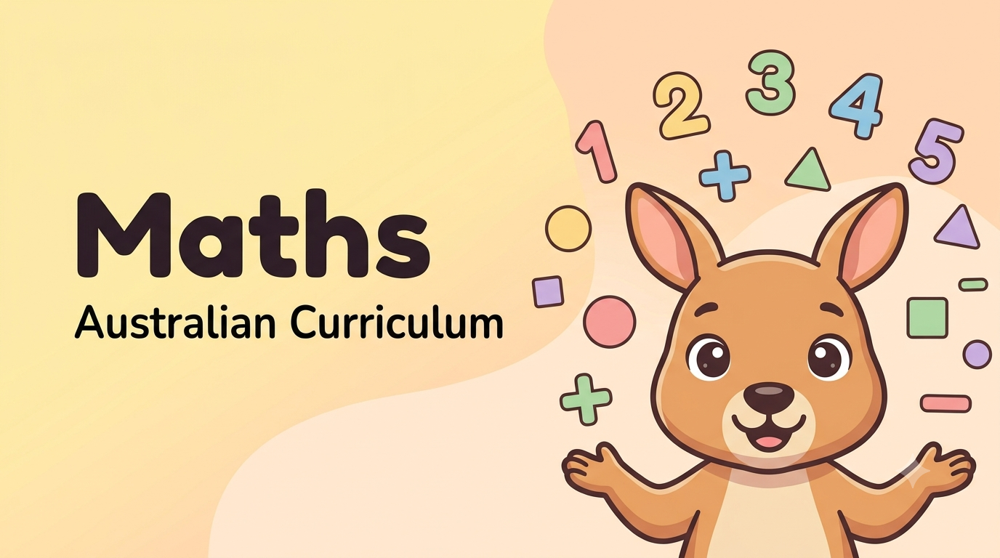
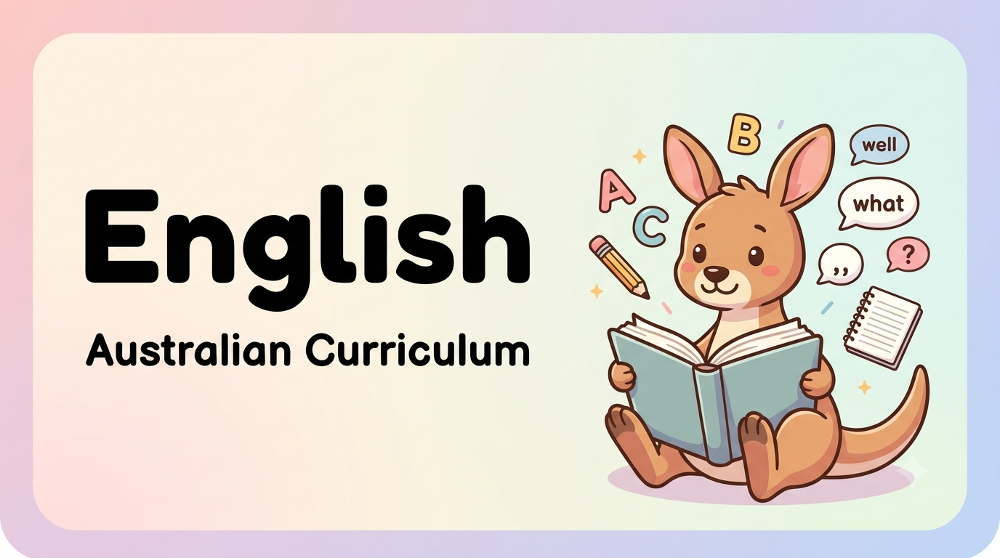
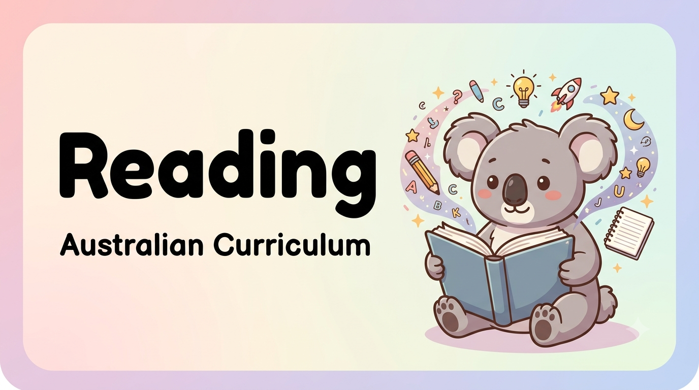
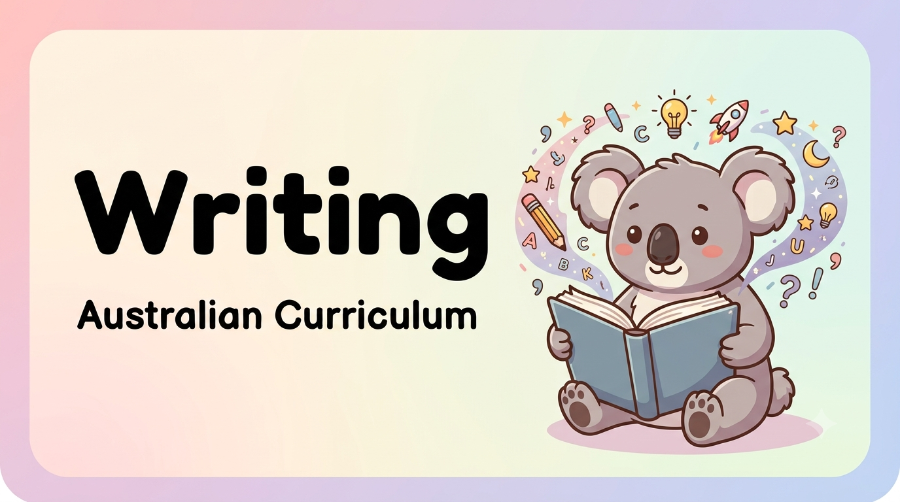
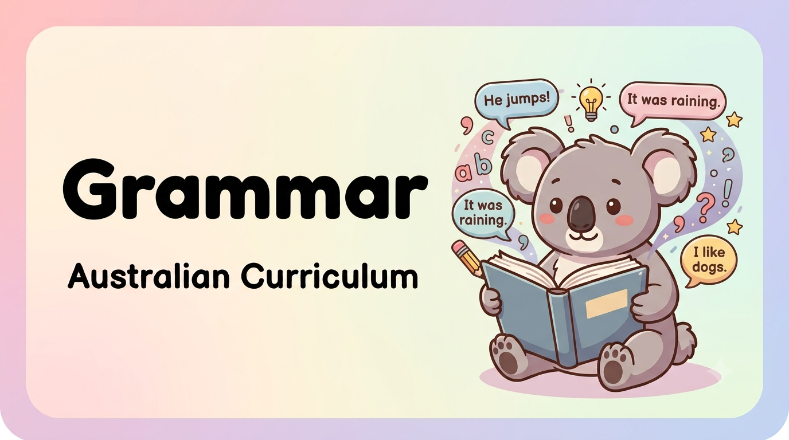
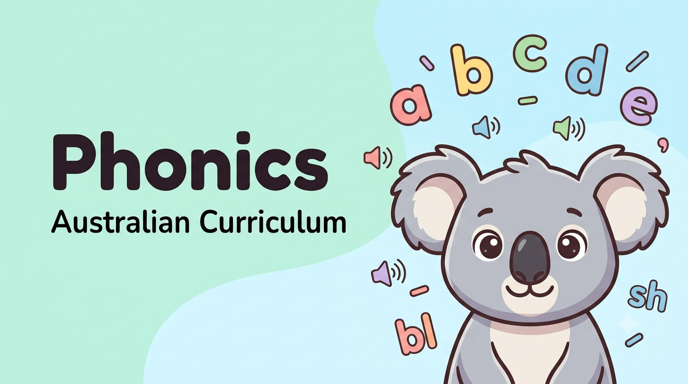
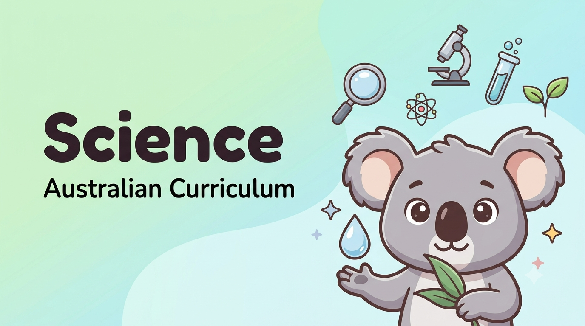

🇦🇺 Australian Curriculum Resources · Foundation to Year 6
Free Australian Curriculum Worksheets for Foundation to Year 6
Free printable Maths, English, Reading, Writing and Science worksheets designed for Australian students, parents and teachers. Resources aligned with the Australian Curriculum v9.0.

Maths
Number skills, fractions, measurement and problem solving
Free PDF
English
Reading, spelling, grammar and language skills
Free PDF
Reading
Reading comprehension and literacy activities
Free PDF
Writing
Creative writing, sentences and text structure
Free PDF
Grammar
Grammar, punctuation and sentence skills
Free PDF
Phonics
Phonics, sounds, decoding and spelling patterns
Free PDF
Science
Science investigations, living things and Earth systems
Free PDF
- Australian Curriculum v9.0
- Free Printable PDFs
- Foundation to Year 6
- Parent & Teacher Friendly
Browse by Year Level
From first sounds to upper primary skills — pick a year level to get started.
🇺🇸 USA Resources
Free Printable USA Kindergarten Worksheets
Explore free Kindergarten Math and ELA worksheets with Common Core-aligned skills for teachers, parents, tutors and homeschool families.
Popular Free Worksheets by Year Level
Explore one useful printable pick from every year level, Foundation to Year 6.
- Foundation · Phonics
- Year 1 · Reading
- Year 2 · Maths
- Year 3 · Maths
- Year 4 · Science
- Year 5 · English
- Year 6 · Science
Free printable · No sign-up required
Free Printable Student Planner
Help students organise homework, reading and daily tasks with our free printable planner pack. It includes weekly planning pages, a daily to-do list, homework checklist and reading log.
Latest from Our Blog
Tips, advice and learning strategies for Australian parents and teachers.
- Year 5 · Maths
Division · Remainders
How to Interpret Remainders in Division Word Problems
A practical Year 5 guide to deciding whether a remainder should be left, rounded up or ignored in real-world division problems.
Read the Guide - NAPLAN 2026 · Parents
NAPLAN Results Guide
Got Your Child's 2026 NAPLAN Results? Here's What to Do Next
A calm, practical guide for Year 3 and Year 5 parents on what the results mean and simple next steps at home.
Read the Guide - Year 3 · English
Year 3 English
Similes and Metaphors for Year 3
Help Year 3 students understand and use similes and metaphors with clear examples and a free printable worksheet.
Read the Guide - Foundation · Maths
Foundation Maths
Foundation Maths: 10 Fun Ways to Learn at Home
Discover 10 fun, practical ways to help your Prep or Foundation child build confidence in maths.
Read the Guide - Year 6 · Writing
Year 6 Writing
Year 6 Writing: Narrative, Persuasive & More
Explore four essential Year 6 writing genres and why students benefit from practising different text types.
Read the Guide